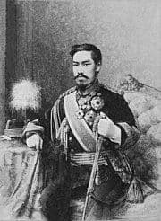

Japan History
The first human inhabitants of the Japanese archipelago have been traced to prehistoric times around 30,000 BCE. The Jōmon period, named after its cord-marked pottery, was followed by the Yayoi people in the first millennium BCE when new inventions were introduced from Asia.
During this period, the first known written reference to Japan was recorded in the Chinese Book of Han in the first century CE.
Around the 4th century BCE, the Yayoi people from the continent immigrated to the Japanese archipelago and introduced iron technology and agricultural civilization.Because they had an agricultural civilization, the population of the Yayoi began to grow rapidly and overwhelm the Jōmon people, natives of the Japanese archipelago who were hunter-gatherers.Between the fourth to ninth century, Japan's many kingdoms and tribes gradually came to be unified under a centralized government, nominally controlled by the Emperor of Japan. The imperial dynasty established at this time continues to this day, albeit in an almost entirely ceremonial role. In 794, a new imperial capital was established at Heian-kyō (modern Kyoto), marking the beginning of the Heian period, which lasted until 1185.The Heian period is considered a golden age of classical Japanese culture. Japanese religious life from this time and onwards was a mix of native Shinto practices and Buddhism.
Over the following centuries, the power of the imperial house decreased, passing first to great clans of civilian aristocrats – most notably the Fujiwara – and then to the military clans and their armies of samurai. The Minamoto clan under Minamoto no Yoritomo emerged victorious from the Genpei War of 1180–85, defeating their rival military clan, the Taira. After seizing power, Yoritomo set up his capital in Kamakura and took the title of shōgun. In 1274 and 1281, the Kamakura shogunate withstood two Mongol invasions, but in 1333 it was toppled by a rival claimant to the shogunate, ushering in the Muromachi period. During this period, regional warlords called daimyō grew in power at the expense of the shōgun. Eventually, Japan descended into a period of civil war. Over the course of the late 16th century, Japan was reunified under the leadership of the prominent daimyō Oda Nobunaga and his successor, Toyotomi Hideyoshi. After Toyotomi's death in 1598, Tokugawa Ieyasu came to power and was appointed shōgun by the emperor. The Tokugawa shogunate, which governed from Edo (modern Tokyo), presided over a prosperous and peaceful era known as the Edo period (1600–1868).
The Tokugawa shogunate imposed a strict class system on Japanese society and cut off almost all contact with the outside world.
Portugal and Japan came into contact in 1543, when the Portuguese became the first Europeans to reach Japan by landing in the southern archipelago. They had a significant impact on Japan, even in this initial limited interaction, introducing firearms to Japanese warfare.
The American Perry Expedition in 1853–54 more completely ended Japan's seclusion; this contributed to the fall of the shogunate and the return of power to the emperor during the Boshin War in 1868. The new national leadership of the following Meiji period transformed the isolated feudal island country into an empire that closely followed Western models and became a great power. Although democracy developed and modern civilian culture prospered during the Taishō period (1912–26), Japan's powerful military had great autonomy and overruled Japan's civilian leaders in the 1920s and 1930s. The Japanese military invaded Manchuria in 1931, and from 1937 the conflict escalated into a prolonged war with China. Japan's attack on Pearl Harbor in 1941 led to war with the United States and its allies. Japan's forces soon became overextended, but the military held out in spite of Allied air attacks that inflicted severe damage on population centers.
Emperor Hirohito announced Japan's surrender on 15 August 1945, following the atomic bombings of Hiroshima and Nagasaki and the Soviet invasion of Manchuria.
The Allies occupied Japan until 1952, during which a new constitution was enacted in 1947 that transformed Japan into a constitutional monarchy. After 1955, Japan enjoyed very high economic growth under the governance of the Liberal Democratic Party, and became a world economic powerhouse.
Since the Lost Decade of the 1990s, economic growth has slowed. On 11 March 2011, Japan suffered from a magnitude 9.0 earthquake and tsunami,
one of the most powerful earthquakes ever recorded, which killed almost 20,000 people and caused the serious Fukushima Daiichi nuclear disaster.
Classical Japan
Asuka period (538–710)

The Asuka period began as early as 538 CE with the introduction of the Buddhist religion from the Korean kingdom of Baekje. Since then, Buddhism has coexisted with Japan's native Shinto religion, in what is today known as Shinbutsu-shūgō.The period draws its name from the de facto imperial capital, Asuka, in the Kinai region. The Buddhist Soga clan took over the government in the 580s and controlled Japan from behind the scenes for nearly sixty years. Prince Shōtoku, an advocate of Buddhism and of the Soga cause, who was of partial Soga descent, served as regent and de facto leader of Japan from 594 to 622. Shōtoku authored the Seventeen-article constitution, a Confucian-inspired code of conduct for officials and citizens, and attempted to introduce a merit-based civil service called the Cap and Rank System.In 607, Shōtoku offered a subtle insult to China by opening his letter with the phrase, "The ruler of the land of the rising sun addresses the ruler of the land of the setting sun" as seen in the kanji characters for Japan (Nippon). By 670, a variant of this expression, Nihon, established itself as the official name of the nation, which has persisted to this day.
Nara period (710–794)

In 710, the government constructed a grandiose new capital at Heijō-kyō (modern Nara) modeled on Chang'an, the capital of the Chinese Tang dynasty. During this period, the first two books produced in Japan appeared: the Kojiki and Nihon Shoki, which contain chronicles of legendary accounts of early Japan and its creation myth, which describes the imperial line as descendants of the gods.[The Man'yōshū was compiled in the latter half of the eighth century, which is widely considered the finest collection of Japanese poetry. During this period, Japan suffered a series of natural disasters, including wildfires, droughts, famines, and outbreaks of disease, such as a smallpox epidemic in 735–737 that killed over a quarter of the population. Emperor Shōmu (r. 724–749) feared his lack of piousness had caused the trouble and so increased the government's promotion of Buddhism, including the construction of the temple Tōdai-ji in 752.The funds to build this temple were raised in part by the influential Buddhist monk Gyōki, and once completed it was used by the Chinese monk Ganjin as an ordination site.Japan nevertheless entered a phase of population decline that continued well into the following Heian period.There was also a serious attempt to overthrow the Imperial house during the middle Nara period. During the 760s, monk Dōkyō tried to establish his own dynasty by the aid of Empress Shōtoku, but after her death in 770 he lost all his power and was exiled. The Fujiwara clan furthermore consolidated its power.
Heian period (794–1185)

In 784 , the capital moved briefly to Nagaoka-kyō, then again in 794 to Heian-kyō (modern Kyoto), which remained the capital until 1868. Political power within the court soon passed to the Fujiwara clan, a family of court nobles who grew increasingly close to the imperial family through intermarriage. Between 812 and 814 CE, a smallpox epidemic killed almost half of the Japanese population.
In 858 , Fujiwara no Yoshifusa had himself declared sesshō ("regent") to the underage emperor. His son Fujiwara no Mototsune created the office of kampaku, which could rule in the place of an adult reigning emperor. Fujiwara no Michinaga, an exceptional statesman who became kampaku in 996, governed during the height of the Fujiwara clan's power and married four of his daughters to emperors, current and future. The Fujiwara clan held on to power until 1086, when Emperor Shirakawa ceded the throne to his son Emperor Horikawa but continued to exercise political power, establishing the practice of cloistered rule, by which the reigning emperor would function as a figurehead while the real authority was held by a retired predecessor behind the scenes.
Throughout the Heian period, the power of the imperial court declined. The court became so self-absorbed with power struggles and with the artistic pursuits of court nobles that it neglected the administration of government outside the capital.The nationalization of land undertaken as part of the ritsuryō state decayed as various noble families and religious orders succeeded in securing tax-exempt status for their private shōen manors. By the eleventh century, more land in Japan was controlled by shōen owners than by the central government. The imperial court was thus deprived of the tax revenue to pay for its national army. In response, the owners of the shōen set up their own armies of samurai warriors. Two powerful noble families that had descended from branches of the imperial family,the Taira and Minamoto clans, acquired large armies and many shōen outside the capital. The central government began to use these two warrior clans to suppress rebellions and piracy.Japan's population stabilized during the late Heian period after hundreds of years of decline.
During the early Heian period, the imperial court successfully consolidated its control over the Emishi people of northern Honshu. Ōtomo no Otomaro was the first man the court granted the title of seii tai-shōgun ("Great Barbarian Subduing General").In 802, seii tai-shōgun Sakanoue no Tamuramaro subjugated the Emishi people, who were led by Aterui. By 1051, members of the Abe clan, who occupied key posts in the regional government, were openly defying the central authority. The court requested the Minamoto clan to engage the Abe clan, whom they defeated in the Former Nine Years' War.The court thus temporarily reasserted its authority in northern Japan. Following another civil war – the Later Three-Year War – Fujiwara no Kiyohira took full power; his family, the Northern Fujiwara, controlled northern Honshu for the next century from their capital Hiraizumi.
In 1156, a dispute over succession to the throne erupted and the two rival claimants (Emperor Go-Shirakawa and Emperor Sutoku) hired the Taira and Minamoto clans in the hopes of securing the throne by military force. During this war, the Taira clan led by Taira no Kiyomori defeated the Minamoto clan. Kiyomori used his victory to accumulate power for himself in Kyoto and even installed his own grandson Antoku as emperor. The outcome of this war led to the rivalry between the Minamoto and Taira clans. As a result, the dispute and power struggle between both clans led to the Heiji rebellion in 1160. In 1180, Taira no Kiyomori was challenged by an uprising led by Minamoto no Yoritomo, a member of the Minamoto clan whom Kiyomori had exiled to Kamakura. Though Taira no Kiyomori died in 1181, the ensuing bloody Genpei War between the Taira and Minamoto families continued for another four years. The victory of the Minamoto clan was sealed in 1185, when a force commanded by Yoritomo's younger brother, Minamoto no Yoshitsune, scored a decisive victory at the naval Battle of Dan-no-ura. Yoritomo and his retainers thus became the de facto rulers of Japan.
Modern Japan
Meiji period (1868–1912)
The emperor was restored to nominal supreme power, and in 1869, the imperial family moved to Edo, which was renamed Tokyo ("eastern capital"). However, the most powerful men in the government were former samurai from Chōshū and Satsuma rather than the emperor, who was fifteen in 1868. These men, known as the Meiji oligarchs, oversaw the dramatic changes Japan would experience during this period. The leaders of the Meiji government desired Japan to become a modern nation-state that could stand equal to the Western imperialist powers. Among them were Ōkubo Toshimichi and Saigō Takamori from Satsuma, as well as Kido Takayoshi, Ito Hirobumi, and Yamagata Aritomo from Chōshū.
Political and social changes
The Meiji government abolished the Edo class structure and replaced the feudal domains of the daimyōs with prefectures.It instituted comprehensive tax reform and lifted the ban on Christianity.Major government priorities also included the introduction of railways, telegraph lines, and a universal education system. The Meiji government promoted widespread Westernizationand hired hundreds of advisers from Western nations with expertise in such fields as education, mining, banking, law, military affairs, and transportation to remodel Japan's institutions.The Japanese adopted the Gregorian calendar, Western clothing, and Western hairstyles. One leading advocate of Westernization was the popular writer Fukuzawa Yukichi.As part of its Westernization drive, the Meiji government enthusiastically sponsored the importation of Western science, above all medical science. In 1893, Kitasato Shibasaburō established the Institute for Infectious Diseases, which would soon become world-famous,and in 1913, Hideyo Noguchi proved the link between syphilis and paresis.Furthermore, the introduction of European literary styles to Japan sparked a boom in new works of prose fiction. Characteristic authors of the period included Futabatei Shimei and Mori Ōgai, although the most famous of the Meiji era writers was Natsume Sōseki, who wrote satirical, autobiographical, and psychological novelscombining both the older and newer styles.Ichiyō Higuchi, a leading female author, took inspiration from earlier literary models of the Edo period.
Government institutions developed rapidly in response to the Freedom and People's Rights Movement, a grassroots campaign demanding greater popular participation in politics. The leaders of this movement included Itagaki Taisuke and Ōkuma Shigenobu. Itō Hirobumi, the first Prime Minister of Japan, responded by writing the Meiji Constitution, which was promulgated in 1889. The new constitution established an elected lower house, the House of Representatives, but its powers were restricted. Only two percent of the population were eligible to vote, and legislation proposed in the House required the support of the unelected upper house, the House of Peers. Both the cabinet of Japan and the Japanese military were directly responsible not to the elected legislature but to the emperor. Concurrently, the Japanese government also developed a form of Japanese nationalism under which Shinto became the state religion and the emperor was declared a living god. Schools nationwide instilled patriotic values and loyalty to the emperor.
Taishō period (1912–1926)
During the short reign of Emperor Taishō, Japan developed stronger democratic institutions and grew in international power. The Taishō political crisis opened the period with mass protests and riots organized by Japanese political parties, which succeeded in forcing Katsura Tarō to resign as prime minister. This and the rice riots of 1918 increased the power of Japan's political parties over the ruling oligarchy. The Seiyūkai and Minseitō parties came to dominate politics by the end of the so-called "Taishō democracy" era. The franchise for the House of Representatives had been gradually expanded since 1890, and in 1925 universal male suffrage was introduced. However, in the same year the far-reaching Peace Preservation Law also passed, prescribing harsh penalties for political dissidents.
Japan's participation in World War I on the side of the Allies sparked unprecedented economic growth and earned Japan new colonies in the South Pacific seized from Germany.After the war, Japan signed the Treaty of Versailles and enjoyed good international relations through its membership in the League of Nations and participation in international disarmament conferences.The Great Kantō earthquake in September 1923 left over 100,000 dead, and combined with the resultant fires destroyed the homes of more than three million.
The growth of popular prose fiction, which began during the Meiji period, continued into the Taishō period as literacy rates rose and book prices dropped.Notable literary figures of the era included short story writer Ryūnosuke Akutagawa and the novelist Haruo Satō. Jun'ichirō Tanizaki, described as "perhaps the most versatile literary figure of his day" by the historian Conrad Totman, produced many works during the Taishō period influenced by European literature, though his 1929 novel Some Prefer Nettles reflects deep appreciation for the virtues of traditional Japanese culture. At the end of the Taishō period, Tarō Hirai, known by his penname Edogawa Ranpo, began writing popular mystery and crime stories.
World War II
In late 1941, Japan's government, led by Prime Minister and General Hideki Tojo, decided to break the US-led embargo through force of arms.On 7 December 1941, the Imperial Japanese Navy launched a surprise attack on the American fleet at Pearl Harbor, Hawaii. This brought the US into World War II on the side of the Allies. Japan then successfully invaded the Asian colonies of the United States, the United Kingdom, and the Netherlands, including the Philippines, Malaya, Hong Kong, Singapore, Burma, and the Dutch East Indies. In the early stages of the war, Japan scored victory after victory. The tide began to turn against Japan following the Battle of Midway in June 1942 and the subsequent Battle of Guadalcanal, in which Allied troops wrested the Solomon Islands from Japanese control.During this period the Japanese military was responsible for such war crimes as mistreatment of prisoners of war, massacres of civilians, and the use of chemical and biological weapons. The Japanese military earned a reputation for fanaticism, often employing banzai charges and fighting almost to the last man against overwhelming odds. In 1944 the Imperial Japanese Navy began deploying squadrons of kamikaze pilots who crashed their planes into enemy ships.
Heisei period (1989–2019)
Emperor Akihito's reign began upon the death of his father, Emperor Hirohito. The economic bubble popped in 1989, and stock and land prices plunged as Japan entered a deflationary spiral. Banks found themselves saddled with insurmountable debts that hindered economic recovery.Stagnation worsened as the birthrate declined far below replacement level.The 1990s are often referred to as Japan's Lost Decade. Economic performance was frequently poor in the following decades and the stock market never returned to its pre-1989 highs.Japan's system of lifetime employment largely collapsed and unemployment rates rose.The faltering economy and several corruption scandals weakened the LDP's dominant political position. Japan was nevertheless governed by non-LDP prime ministers only in 1993–1996 and 2009–2012.
Japan's dealing with its war legacy strained relations with China and Korea. Japanese officials and emperors made over 50 formal war apologies since the 1950s. However, some politicians of China and Korea found the official apologies, such as those of the Emperor in 1990 and the Murayama Statement of 1995, inadequate or insincere. Nationalist politics have exacerbated this, such as denial of the Nanjing Massacre and other war crimes,revisionist history textbooks, which provoked protests in East Asia.Japanese politicians make frequent visits to Yasukuni Shrine to commemorate the people who died in wars from 1868 to 1954, but convicted war criminals are among the enshrined.
The population of Japan peaked at 128,083,960 in 2008. It decreased by 2,373,960 in December 2020. In 2011, the economy of China became the world's second largest. Japan's economy descended to third largest by nominal GDP.Despite Japan's economic difficulties, this period also saw Japanese popular culture, including video
games, anime, and manga, become worldwide phenomena, especially among young people.
In March 2011, the Tokyo Skytree became the tallest tower in the world with 634 metres (2,080 ft) by displacing the Canton Tower. It is the second tallest structure in the world after the Burj Khalifa (829.8 m or 2,722 ft).On 11 March 2011, one of the largest earthquakes recorded in Japan occurred in the northeast. The resulting tsunami damaged the nuclear facilities in Fukushima, which experienced a nuclear meltdown and severe radiation leakage.
Reiwa period (2019–present)
In 2020, Tokyo was supposed to host the Summer Olympics for the second time since 1964. Japan will become the first Asian country to host the Olympics twice in the country. However, due to the global outbreak and economic impact of COVID-19 Pandemic, the Summer Olympics were ultimately postponed to 2021. The new date for the Olympics took place from 23 July to 8 August 2021.Japan ranked third place with 27 gold medals.